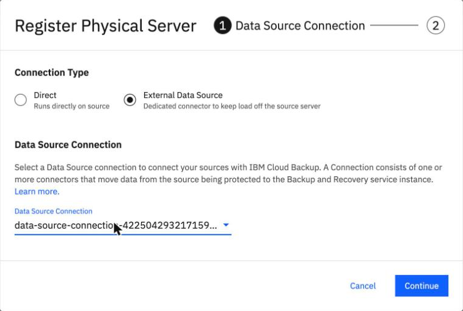
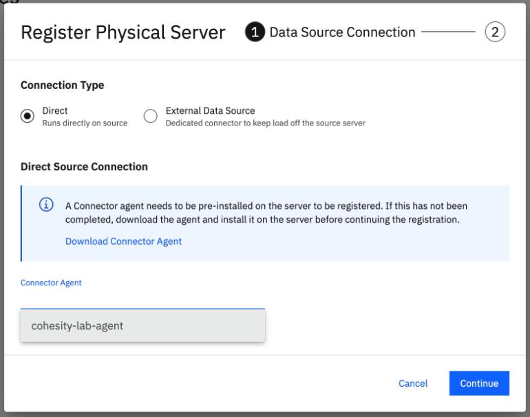
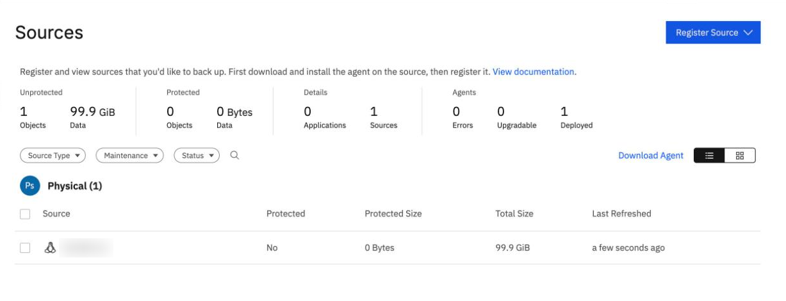
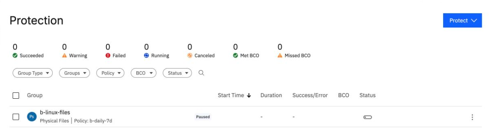

The pieces
By the end you can name the pieces a backup needs (instance, connector, Connector Agent, source, policy and protection group) and follow how data flows between them.
Northgate Freight is a made-up company. It wants to back up the folder /data on a Linux server. Today it learns what it must set up, and in what order.
The facts here come from IBM's pages as read on 24 September 2026, and from runs in our lab on 7 October and 8 November 2026. Addresses, the server's name and IDs were replaced with made-up values or blurred.
Seven pieces, one backup
These are the three commands that register a server, make a policy and make a group. The values are placeholders. Select a part of the drawing to see what it is, and which lines belong to it.
The backup agent
You install it on each server you protect. You install it first, then register the server: the Sources page says "First download and install the agent on the source, then register it". The connector talks to it on TCP 50051.
The source
A server registered with the instance. The command names the connection and the server's address (the lines marked here). In the console it is Data Protection > Sources > Register Source. A new source shows Protected: No until a group protects it.
The Connector Agent
A small program on the source host. It opens a direct connection to the service and replaces the connector server for that host. You still install the backup agent. It needs outbound TCP 443, 29991 and 11117, and 1 vCPU and 512 MB for about 100 MB/s.
The connector and its connection
A connection is a logical object in the instance: a group of one or more connectors. IBM's page calls it "a tunnel". A connector is a server in your VPC with 4 vCPU, 16 GB RAM and a 171 GB disk. One connector serves many hosts. It talks to the service on TCP 443 and 29991.
Watch for this. IBM advises at least 2 connectors per connection. Our lab tests used one.
The instance
IBM runs it. It holds the control plane, the dashboard, the API, the policies and the protection groups. You make it once, in a region, and many connections, sources and groups use it.
The policy
When to back up and how long to keep each backup. The one in the lines shown runs daily, keeps backups for 7 days and has no data lock.
The protection group
What to back up: a source and its paths, plus a policy. This one is file-based, on /data, and paused so that only manual runs happen.
ibmcloud backup-recovery protection-source register --environment kPhysical --xibm-tenant-id $T \
--data-source-connection-id <CONNECTION_ID> --physical-params '{"endpoint":"<SERVER_IP>","hostType":"kLinux","physicalType":"kHost"}'
ibmcloud backup-recovery protection-policy create --xibm-tenant-id $T --name <POLICY_NAME> --description "daily, kept 7 days" \
--backup-policy '{"regular":{"incremental":{"schedule":{"unit":"Days","daySchedule":{"frequency":1}}},"primaryBackupTarget":{"useDefaultBackupTarget":true},"retention":{"unit":"Days","duration":7}}}'
ibmcloud backup-recovery protection-group create --xibm-tenant-id $T --environment kPhysical --name <GROUP_NAME> \
--policy-id <POLICY_ID> --is-paused \
--physical-params '{"protectionType":"kFile","fileProtectionTypeParams":{"objects":[{"id":<SOURCE_ID>,"filePaths":[{"includedPath":"/data","skipNestedVolumes":false}]}],"performSourceSideDeduplication":false}}'
What comes first, and which route
Northgate has a Linux server with the backup agent installed and a new BRS instance. It asks what it must make, and in what order.
Northgate wants to register its Linux server as a source through a connector server. What must exist before the register command works?
Show the answer
Registering a source needs "a connected connector or agent; you need its connection ID". The server also needs the backup agent installed, as the Sources page says. The policy and the group come after the source.
Which route needs no connector server running all the time?
Show the answer
The Connector Agent has no 4-vCPU, 16 GB server, no catalog image, no browser step and no password to keep. The cost is that each protected host needs its own agent, where one connector server serves many hosts. Both routes need the backup agent on the host.
Source, then group
These screens come from the BRS console in our lab on 8 November 2026. Click where you would click. After two misses the right place is marked.

You are registering the server. Which choice uses a connector server?
Show where
Right. External Data Source means a dedicated connector, and a Data Source Connection list appears for you to pick the connection. Direct runs on the source and uses the Connector Agent.

You chose Direct. Where does the Connector Agent you claimed on the server show up?
Show where
Right. The Connector Agent field lists the connection name you sent when you claimed the agent. In our lab on 8 November 2026 a dialog left open from before the claim showed an empty list; reloading the page fixed it.

The server is registered. Where does the page tell you nothing protects it yet?
Show where
Right. Protected: No and 0 Bytes protected. Registering makes a source; a protection group is what protects it.

Northgate made a group. Where do you read which policy it uses?
Show where
Right. The group b-linux-files is Physical Files, uses the policy b-daily-7d, and is Paused, so only manual runs happen.
Two things that look wrong and are not
Northgate sets up a connector server and a Connector Agent on two servers. Two screens look odd.
A Connector Agent has been claimed. Northgate opens System > Data Source Connections and the agent's connection is not listed. What does that mean?
Show the answer
In our lab on 8 November 2026 the page showed only the connector server's connection, and the command-line list for connections showed the same. The agent's connection appears in the Connector Agent field when you register a source.
A new connector server's page shows Unhealthy with "Connection dropped to dataplane due to internal error". What does Northgate do?
Show the answer
The fix is to wait. In our lab on 8 November 2026 the connector went from connected to disconnected twice, then stayed connected from 11:32:54 to the last check at 11:36:26. Reload the page to see Healthy.
Three questions
Which two things does a protection group name?
Show the answer
The create-group command gives the source's object and paths, and the policy ID.
Review from unit 1.1. Who installs and upgrades the backup agent on a protected server?
Show the answer
The customer installs and upgrades backup agents, in IBM's shared-responsibility table.
Which piece sits on the source host and replaces the connector server for that host?
Show the answer
The Connector Agent. You still install the backup agent as well.
You can name the pieces
A backup needs an instance, a connection with a connector (or a Connector Agent on the host), the backup agent on the server, a registered source, a policy, and a protection group that joins a source to a policy. The Connector Agent needs no connector server but must be on every protected host.